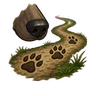
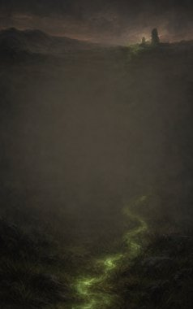
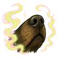
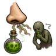
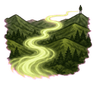
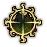
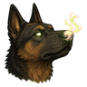
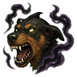

Tracking D
D-rank passive. Follow any trail: better hunting.

Technique trees › Clans and bloodlines
7 techniques · Clan tab
Unlocks for pawns with the Inuzuka gene.

D-rank passive. Follow any trail: better hunting.

C-rank. Smell enemies coming: the fog lifts around you.
| Rank | Chakra | Cooldown | Class level |
|---|---|---|---|
| C | 20 | 15 s | 5 |

C-rank. Smell sickness and poison: better tending, and poison on your allies is cleaned away.
| Rank | Chakra | Cooldown | Class level |
|---|---|---|---|
| C | 20 | 15 s | 5 |

B-rank. A nose for very distant enemies.
| Rank | Chakra | Cooldown | Class level |
|---|---|---|---|
| B | 35 | 25 s | 9 |

B-rank. Pin one enemy's scent: they can't dodge you.
| Rank | Chakra | Cooldown | Class level |
|---|---|---|---|
| B | 35 | 15 s | 9 |

B-rank passive. Your nose never sleeps.

B-rank. Smell your enemies' fear for a fight: hit harder and dodge better.
| Rank | Chakra | Cooldown | Class level |
|---|---|---|---|
| B | 35 | 25 s | 9 |